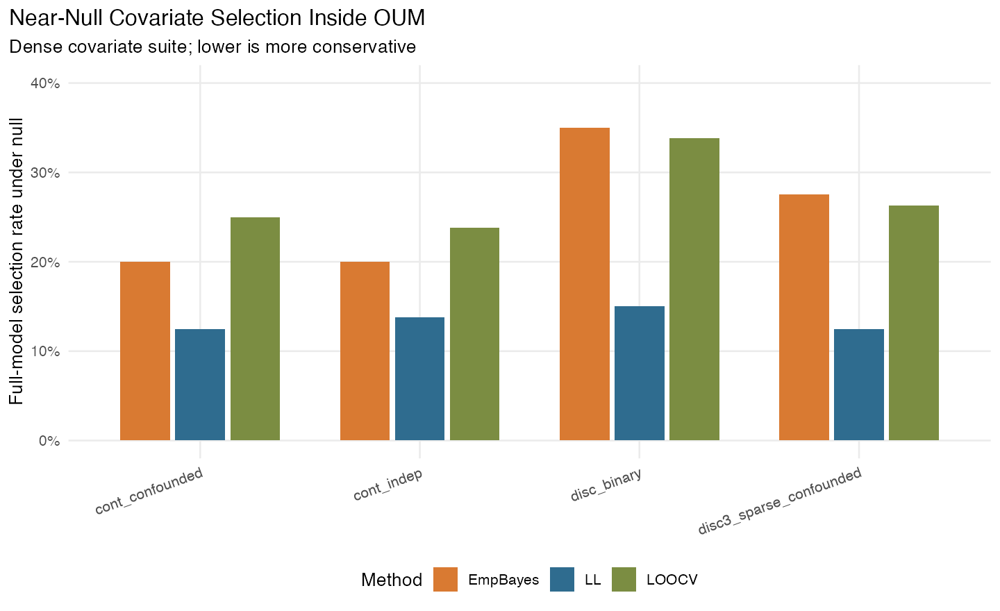
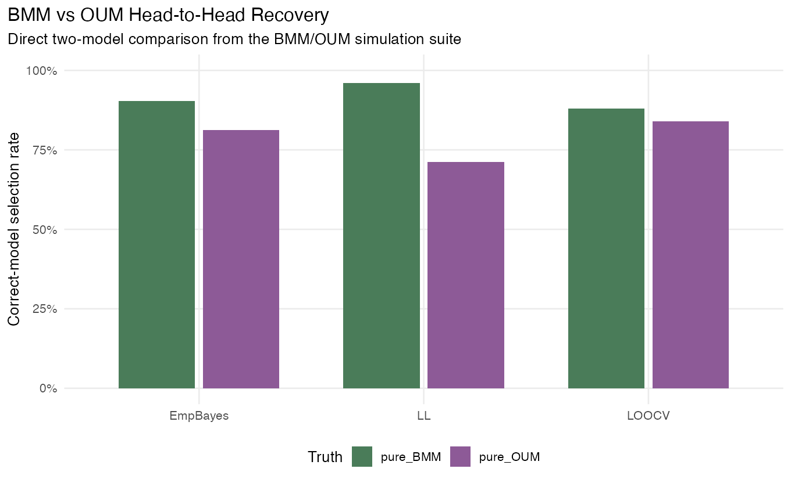
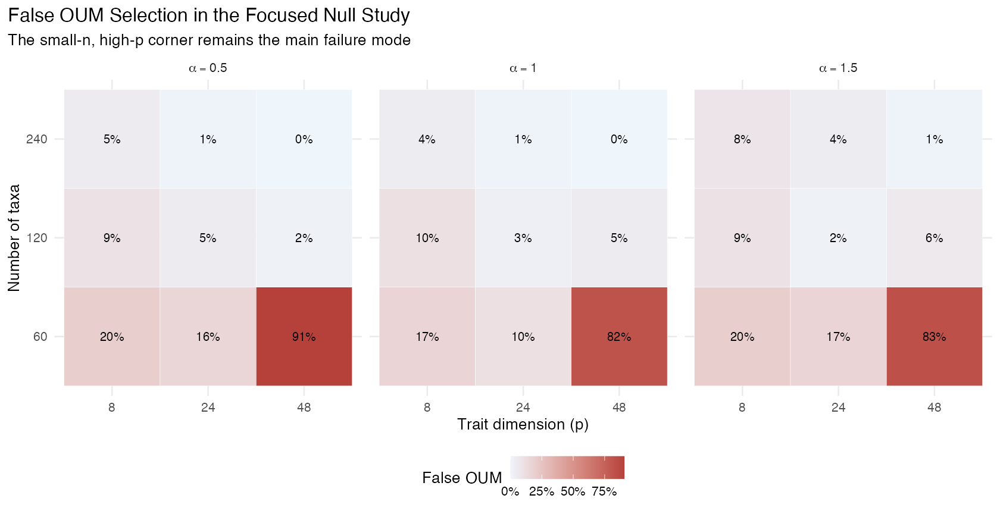
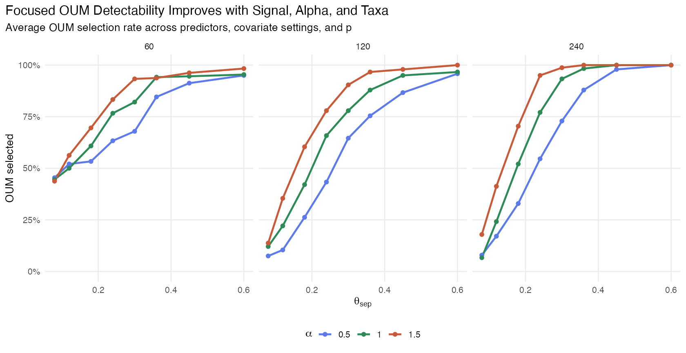
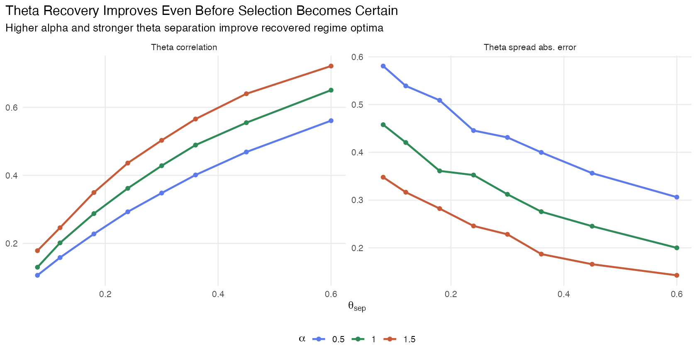
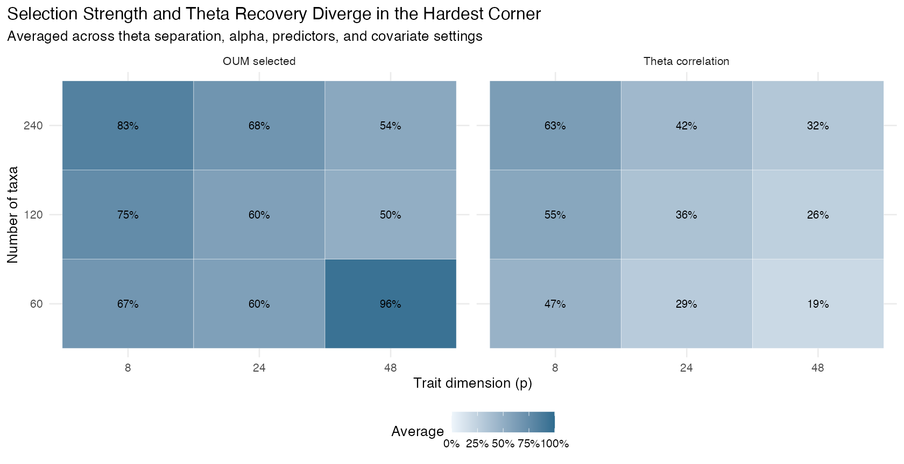
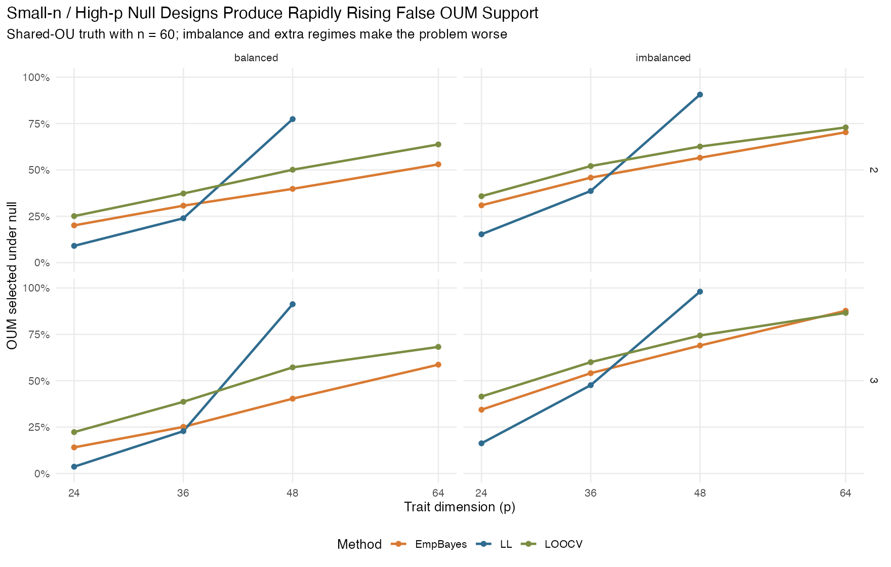
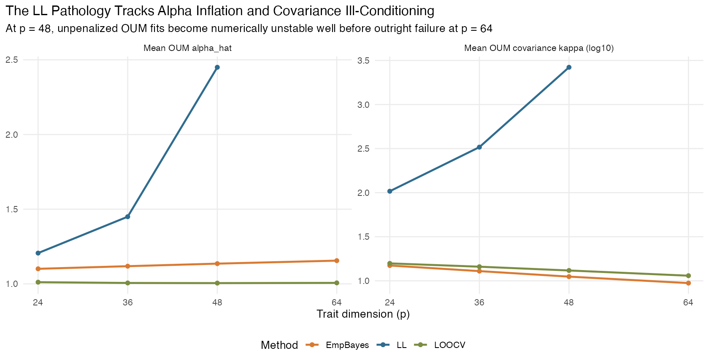

Generated on 2026-03-24 18:48 EDT
archon-pulls/tg18/tests/.mvgls(model = "OUM") covariate path is mechanically
solid: it fit successfully, preserved covariates through prediction and
downstream methods, and behaved sensibly on real data and targeted
tests.LOOCV,
EmpBayes) than for LL.BMM vs OUM comparisons under
GIC are asymmetric: BMM is recovered strongly,
while OUM is much easier to miss, especially when candidate
sets include shared models.OU vs OUM comparison is better
calibrated than BMM vs OUM, but still weak in
mixed or high-dimensional small-sample settings.theta recovery is
materially better than model selection alone suggests. In favorable
settings, regime optima can be estimated well even before
OUM wins every model comparison.p approaches n, false OUM support
can become very large across all methods, and unpenalized
LL starts to break down numerically before it fails
outright.simmap trees and ordinary
regression covariates such as log(mass).LL, penalized fits, EmpBayes,
error=TRUE, predict(),
ancestral(), manova.gls(), GIC(),
and EIC().phyllostomid example, OUM plus a size
covariate fit cleanly and returned both regime-optimum rows and
regression-effect rows in the coefficient matrix.LL consistently more
conservative than EmpBayes and LOOCV.
BMM vs OUM comparison,
recovery was asymmetric.BMM truth, the correct model was selected
LL: 96.1%, EmpBayes: 90.4%, LOOCV: 87.9%.OUM truth, the correct model was selected
LL: 71.2%, EmpBayes: 81.3%, LOOCV: 83.9%.BMM, which was the first strong warning that raw
GIC comparisons were not neutral between these model
families.
BM, OU,
BMM, and OUM, the shared-model truths were
recovered asymmetrically: the correct model won 46.6% under shared BM
truth and 82.4% under shared OU truth.OUM was almost never the
winner in the OUM frontier or mixed-signal phases. This showed that lack
of an OUM win is weak evidence against optimum shifts when
the candidate set is broad.OU vs OUM comparison was better
calibrated than BMM vs OUM: false
OUM selection under shared-OU truth averaged 4.7% for
balanced painted regimes and 9.2% for imbalanced regimes.OUM selection, and only 42
crossed 80%.OU and OUM estimated low alpha values
regardless of the true simulated alpha.n and p.OUM selection under the null was 16.0%,
but the failure mode was very concentrated.OUM selection fell from 39.5%
at n=60 to 5.9% at n=120 and 2.8% at
n=240.p=48, where the average false OUM rate was
30.1%.
OUM was selected 22.2% at
theta_sep = 0.08, 52.0% at 0.18, 82.4% at
0.30, and 97.9% at 0.60.OUM selection rose from 59.8% at alpha = 0.5
to 76.3% at alpha = 1.5.alpha_hat for OUM was 0.5 -> 0.85; 1 ->
1.36; 1.5 -> 1.88.
theta_sep = 0.08 to 0.64 at
theta_sep = 0.60.n=240, p=8,
alpha=1.5), the empirical 50% and 80% selection thresholds
were about 0.080 and 0.135; at p=24 with the same
n and alpha, they rose to about 0.135 and
0.195.n=60, p=48 corner remained pathological: it often
selected OUM strongly under the null while yielding poor
theta correlation, so those cells should not be interpreted as genuine
detectability wins.

n = 60 under shared-OU truth and
asked what happens as trait dimension increases through
p = 24, 36, 48, 64, while varying regime count, regime
balance, covariate type, covariate strength, alpha, and fitting
method.p = 24, false OUM selection was still
moderate: LL 11.1%, EmpBayes 24.9%, LOOCV 31.2%.p = 48, the methods had separated sharply: LL jumped
to 89.3%, while EmpBayes and LOOCV were at 51.4% and 61.1%.p = 64, unpenalized LL was no longer
interpretable: OUM fit rate was 0.0%, both-model GIC availability was
0.0%, and the issue rate was 100.0%. The dominant warning was
There are more variables than observations, which is
exactly the unsupported regime we wanted to isolate.OUM selection rose from 38.0% to 51.1% for
LL, from 35.2% to 56.1% for EmpBayes, and from
45.3% to 60.7% for LOOCV.0 to
0.05 barely moved the null selection rate.
LL pathology at
p = 48 was accompanied by a strong blow-up in covariance
conditioning and fitted alpha. Mean alpha_hat under OUM
rose from about 1.21 at p = 24 to 2.45 at
p = 48, while mean OUM covariance condition number rose
from about 103.8 to 2644.3.p = 48, mean OUM covariance condition number was
only about 11.2 for EmpBayes and 13.1 for
LOOCV, with fitted alpha staying close to 1.LL: it is still the safest default in moderate dimensions,
but once p gets close to n, the unpenalized
OUM fit can become a numerical pathology rather than a conservative
baseline.
LL is the safest default when
trait dimension is moderate relative to sample size. It should not be
treated as a safe baseline in the truly high-dimensional
p \approx n regime.OU vs OUM comparison is more
interpretable than BMM vs OUM when the
scientific question is about optimum shifts.OUM is weak evidence against optimum
shifts unless the dataset is in a favorable regime.OUM is not yet winning every
comparison.